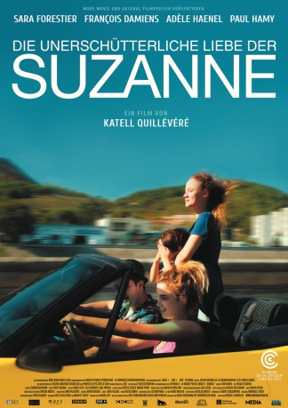

#6394 Die Unerschütterliche Liebe der Suzanne
 
 IMDB-Wertung: 6.7 / 10
IMDB-Wertung: 6.7 / 10  Metascore: 0
Metascore: 0 
Die beiden Schwestern Suzanne und Maria halten zusammen wie Pech und Schwefel. Trotz des frühen Todes ihrer Mutter haben die beiden jungen Frauen eine glückliche Kindheit verbracht. Nicolas, ihr manchmal etwas tapsiger, aber sehr liebevoller Vater, schmeißt den Haushalt, so gut er kann, bis zu dem Tag, an dem Suzanne ihre Schwangerschaft verkündet. Mit dem kleinen Charlie vergrößert sich die Familie und lebt weiterhin einträchtig zusammen, bis Suzanne eines Tages Julien kennenlernt, einen halbseidenen jungen Kerl, und sich unsterblich in ihn verliebt. Es dauert nicht lange, bis sie mit ihm davonläuft und alles hinter sich lässt...
Jahr: 2013
Dauer: 93 Minuten
FSK: 12
Land: Frankreich Studio: Arsenal FilmverleihTonspuren:
Untertitel:
Auflösung: 1080p (1920x1040) Größe: 5990 MB
Genre: Drama
Regisseur: Katell Quillévéré
Drehbuch: Mariette Désert
Soundtrack:
Darsteller:
- Sara Forestier als Suzanne Merevsky
 François Damiens als Nicolas Merevsky
François Damiens als Nicolas Merevsky- Adèle Haenel als Maria Merevsky
 Lola Dueñas als Irène
Lola Dueñas als Irène Corinne Masiero als Éliane, l'avocate
Corinne Masiero als Éliane, l'avocate- Paul Hamy als Julien
- Anne Le Ny als Mme Danvers, la mère d'accueil
- Karim Leklou als Vince
- Apollonia Luisetti als Suzanne enfant
- Fanie Zanini als Maria enfant
- Timothé Vom Dorp als Charlie petit
- Maxim Driesen als Charlie enfant
- Jaime Da Cunha als Charlie ado
- Hélène Alexandridis als La directrice de l'internat
- Franck Xabrame als Policier douane
- Pierre Mourdie als L'autostoppeur
- James De Freitas als Tony, le collègue
- Manuela Gourary als La voisine de Nicolas
- Frank Beauvais als Etienne
- Yannick Leclerc als Patron bar Le Central
- Sophie Szoniecky als Sophie, la gardienne
- Jean-Pierre Mabille als Le juge
- Séverine Vasselin als Isabelle Merevsky, photo
- Sophie Garagnon als Maryse
- Capucine Ducastelle als Sylvie
- Baptiste Quillévéré als André
- Nicolas Clauss als Claude
- Ania Svetovaya als La fille slave
- Mareike Engelhardt als La maîtresse
- Anne Tracol als La patronne
- Jérôme Lebourg als Marc
- Eric Hernandez als Le gardien hôtel Julien
- Eric Pessey als Chauffeur bus de nuit
- Coline D'Inca als Célia, 17 ans
- Sophie Domergue als L'infirmière
- Claire Daguerre als L'assistante sociale
- Benjamin Duc als Arnaud
- Romy Rosoff als Célia, 8 ans
- Agathe Picard als Solange, 6 mois
- Leyna Kerdjou Soriano als Solange, 1 an
- Hirone Picard als Thomas, 14 ans
- Max Sebbane als Thomas, 4 ans
Datei: X:\2013(N-Z)\Unerschütterliche Liebe der Suzanne, Die (2013, FSK12, 1920x1040).mkv seit 13.06.2017
Festplatte: HD 2013(I-Z)-2014(A-Z)
 Es gibt insgesamt 133 Filme in der Gruppe '2013(N-Z)'
Es gibt insgesamt 133 Filme in der Gruppe '2013(N-Z)'